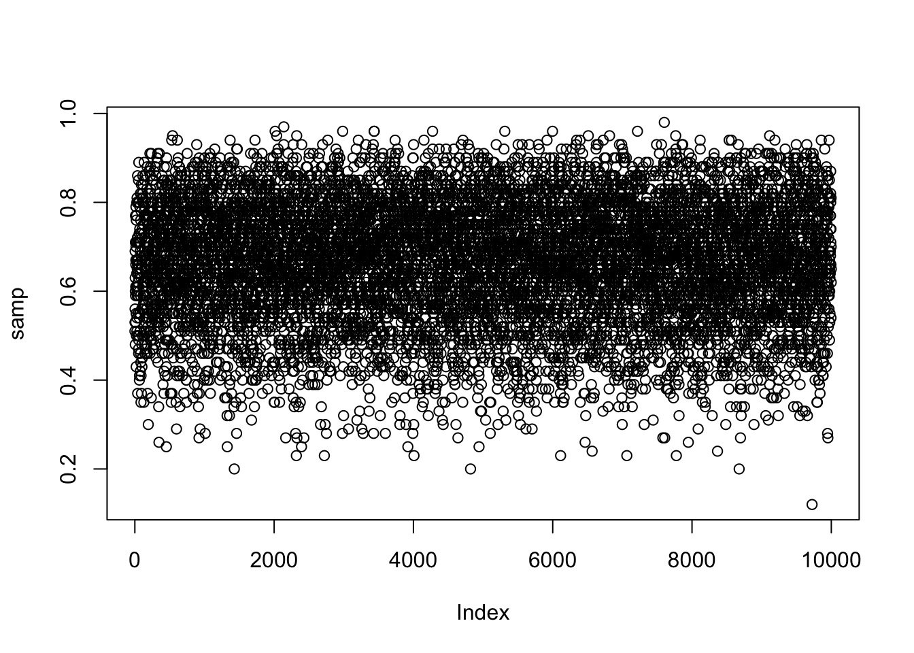
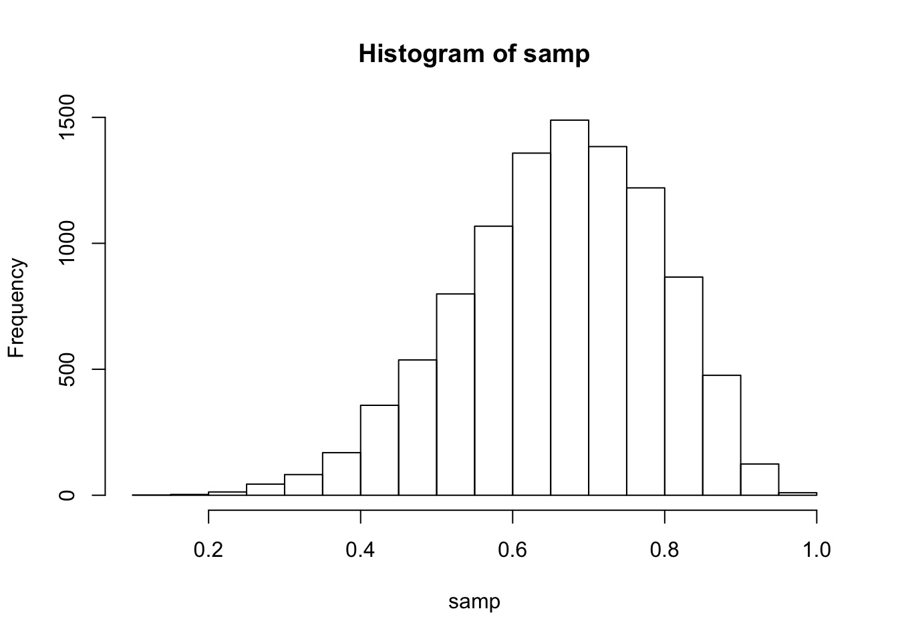
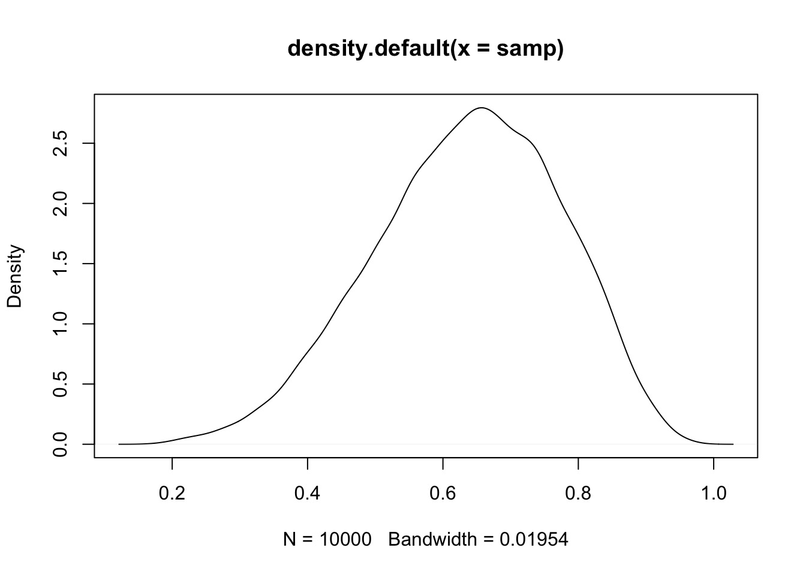
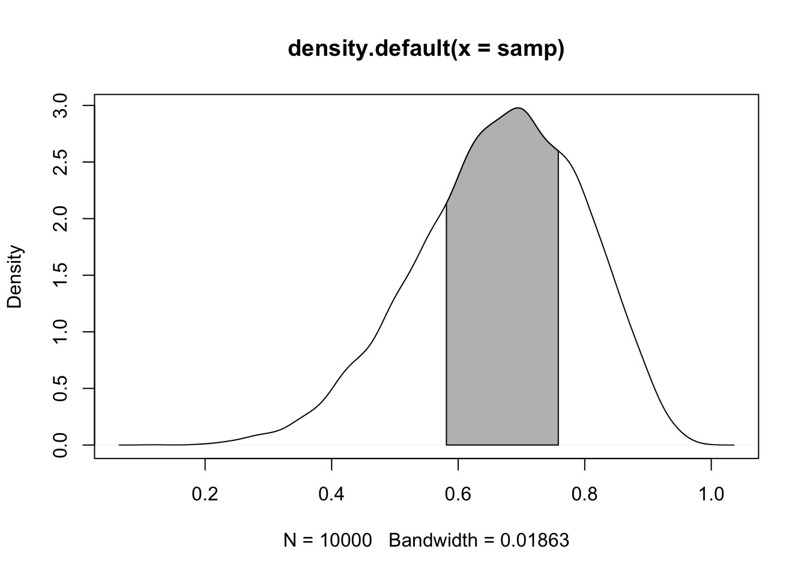
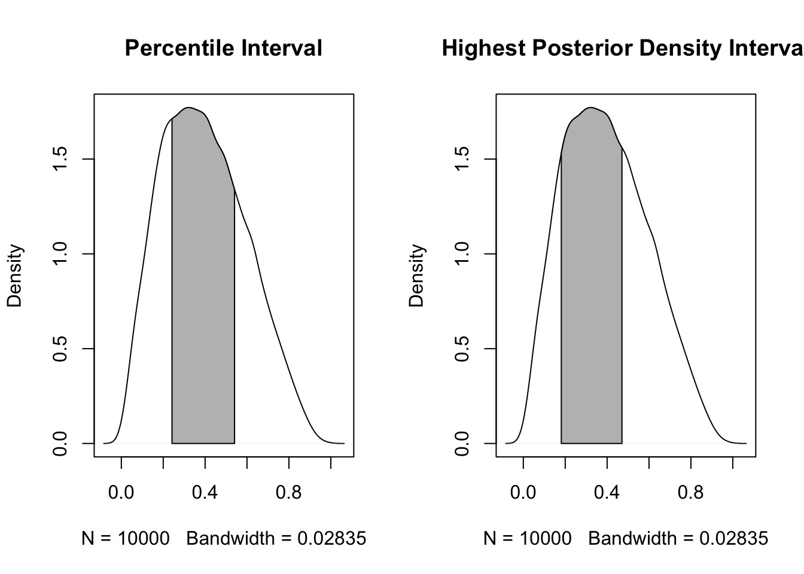
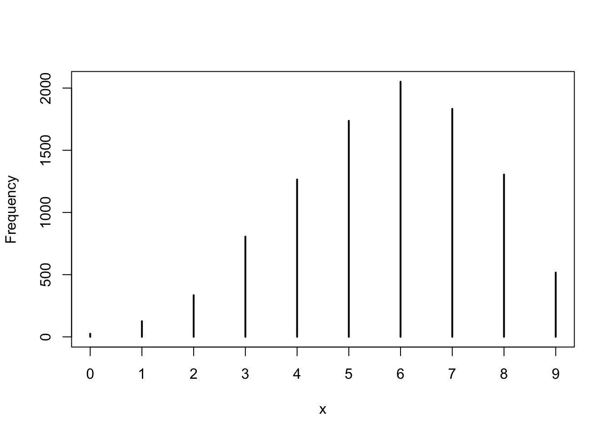
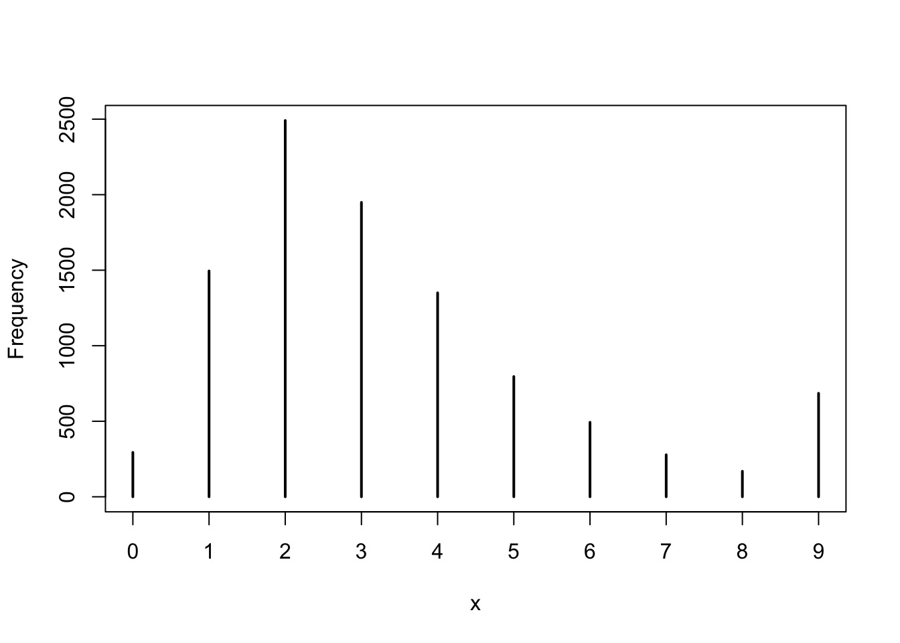

Sampling Your Posterior
The data
So, we’ve flipped the globe 6 times, and drawn W,L,W,W,W,L,W,L,W
water <- 6
And we’ve made a grid sample
library(dplyr)
grid <- data.frame(prob = seq(0,1,.01), prior=1) %>%
mutate(likelihood =
dbinom(water, size = 9, prob = prob)) %>%
mutate(posterior = likelihood*prob)Sampling from your Posterior
samp <- sample(grid$prob,
size = 1e4,
replace=TRUE,
prob = grid$posterior)Sampling from your Posterior
plot(samp)
What can we do with this: histogram
hist(samp)
What can we do with this: density
plot(density(samp))
Summarizing a Parameter with a Sample
How do we describe a parameter
- Typically we want to know a parameter estimate and incormation about uncertainty
- Uncertainty can be summarized via the distribution of a large sample
- We can look at credible intervals based on mass of sample
- We can look at credible intervals based on mass of sample
- We have a few point estimates we can also draw from a sample
- Mean, median, mode
Summarizing Uncertainty: 50th Percentile Interval
We often look at the 95% interval
quantile(samp, c(0.025, 0.975)) 2.5% 97.5%
0.39 0.89 But this is arbitrary (thanks, Fisher), and unstable. Lower intervals are more stable
quantile(samp, c(0.25, 0.75)) 25% 75%
0.58 0.76 Summarizing Uncertainty: 50th Percentile Interval
So, let’s see it! 
PI v. HPDI
- Percentile Intervals get interval around median that covers X% of the distribution
- Highest Posteriod Density Interval gets interval with highest density containing 50% of mass of distribution
PI(samp, 0.5) 25% 75%
0.58 0.76 HPDI(samp, 0.5)|0.5 0.5|
0.56 0.74 PI v. HPDI for a Skewed Distribution
samp_bad <- rbeta(1e4, 2,3)
PI(samp_bad, 0.5) 25% 75%
0.2396864 0.5410283 HPDI(samp_bad, 0.5) |0.5 0.5|
0.1796986 0.4711888 PI v. HPDI

So which interval to use?
- Usually, they are quite similar
- PI communicates distirbution shape for parameter
- HPDI matches more with the mass of the parameter that is consistent with the data
- BUT - computationally intensive and sensitive to # of posterior draws
- If the two are very different, the problem is not which interval type to use
- It’s in your model/data! Buyer beware!
Which Point Estimate: Mean, Median, Mode?
mean(samp)[1] 0.665593median(samp)[1] 0.67#mode
samp[which.max(grid$posterior)][1] 0.79Applying a Loss Function!
- Well, let’s think about the cost of getting it wrong!
- Assume a point estimate of d
- The cost of being wrong if using d is:
\(\sum{posterior * \left |(d-p)\right |}\)
- Could have also squared or done other things depending on cost of being wrong
- Can apply this to chosing \(\alpha\) and \(\beta\) in frequentist stats!
Linear Loss Function Says Median (it’s close)!
loss_fun <- function(d) sum(grid$posterior * abs(d - grid$prob))
loss <- sapply(grid$prob, loss_fun)
grid$prob[which.min(loss)][1] 0.68Choosing a loss function
- Usually the mean and median will agree
- If the cost of being wrong is higher, go with the mean
- If this is a big problem, or big discrepancy, problem might be deeper
Using your samples for model checking
Model Checking - Why?
- We’re in Simulation land
- A lot can go wrong do to small errors in our model
- A lot can go wrong because of big errors in our model
- Maybe our software failed (i.e., convergence)
- Maybe our sampling design cannot produce valid estimates
How do you check models?
- Did you reproduce your observed summarized data?
- Did you reproduce patterns in your raw data?
Simulating from your Posterior Sample
- Make random draws using your sampled parameters
w <- rbinom(1e4, size=9, prob = samp)table(w)w
0 1 2 3 4 5 6 7 8 9
12 78 254 606 1093 1650 2113 2018 1539 637 Simulating from your Posterior Sample
simplehist(w)
Note that 6 is the peak, and our draw was w=6!
Getting Fancier with Checking
- We drew W,L,W,W,W,L,W,L,W
- Can we reproduce 3 Ws as the most common run?
- This will require fancier use of the posterior to simulate order of observations
- See slide code - but, this empahsized the subjective nature of model checking!
So, reproducing runs of W

We had a run of 3 - not bad, not spot on - is this a good model or check?
Exercise
- Choose a # of observations and # of tosses that land on W
- Use grid sampling to get a posterior with your choice of prior
- Derive point estimates and uncertainty
- Did your model checks show you were all good?